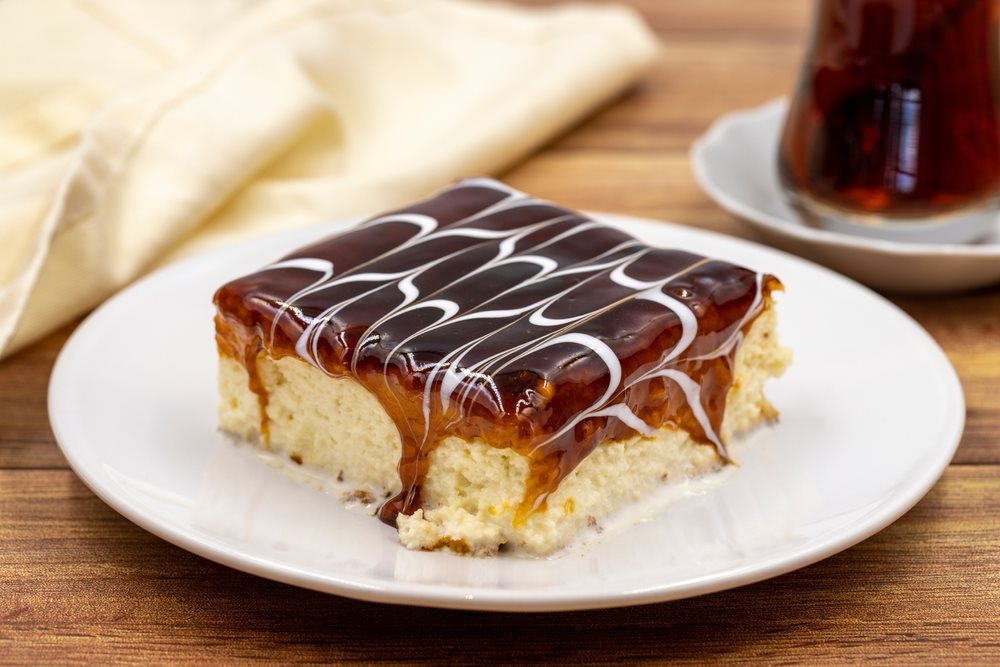

Trileçe

Trileçe, sometimes known as tres leches cake or Three-Milk cake, is a cake from the Balkans. It
is a delicate soft sponge that is drenched in a combination of three milks. Generally, it is covered with
caramel. It can be had cold or, after a meal or at break time.
Cooking time: 40 min
Servings: 14
Level: Advanced
Ingredients
- 6 eggs
- 280g caster sugar
- 400g flour
- 2 Tbsp baking powder
- 1 pinch salt
- 2 teaspoons vanilla extract
- 1.5l whole milk
- 400ml unsweetened condensed milk
- 400g double cream
- 400g caster sugar
- 50g brown sugar
- 120ml whole milk
- 50g cornstarch
- 250g unsalted butter
- half teaspoon salt
- half teaspoon vanilla extract
Instructions
Biscuit
- Preheat the oven to 180°C
- Line the bottom of a rectangular, removable cake pan measuring 30 x 20 cm and at least 8 cm deep.
- Separate the eggs.
- In the bowl of a stand mixer, add the egg whites, add a pinch of salt and beat them until stiff,
gradually
adding half the sugar.
- Stop beating when soft white peaks form on the beater.
- The mixture should be white and have a smooth, shiny texture.
- In another bowl, beat the egg yolks, vanilla, and the other half of the sugar until the mixture whitens.
- Gently fold the beaten yolks into the egg whites, mixing with a spatula with a movement from the bottom
of
the bowl upwards to avoid breaking the egg whites.
- Sift the flour and baking powder over the eggs and gently fold them in with a spatula in the same motion
as
the previous one.
- Pour the batter into the mold and smooth out. Then tap the mold against the work surface to even out.
- Bake for 25 minutes.
- Unmold and place the biscuit on a cooling rack for 30 minutes.
Micing of milks
- Once the cake has cooled, quickly combine the whole milk, unsweetened condensed milk, and heavy cream in
a
non-stick saucepan and heat them.
- Remove from heat just before boiling again.
- Using a skewer, poke small holes all over the surface of the biscuit.
- Pour half of the milk mixture into the pan and place the biscuit in it.
- Pour the rest of the milk mixture all over the biscuit and place it in the fridge for 3 hours.
Caramel icing
- Add the caster sugar into a non-stick coated saucepan and let it melt over low heat without touching it.
- While the sugar is melting, mix the cornstarch with a little water to form a thick mixture and set
aside.
- Once the sugar begins to melt, stir several times with a wooden spoon.
- Once it is completely melted, stir gently until it turns to a dark golden brown.
- Remove the melted sugar from the heat, add the milk and stir.
- Put the pan back on the heat and add the butter and cornstarch.
- Stir continuously until the butter is completely melted.
- Add the salt to the caramel and stir for a few more seconds.
- Immediately pour the caramel over the cake and let stand for 10 minutes, then refrigerate for at least 2
hours before serving in square portions.
Back to All Recepies.